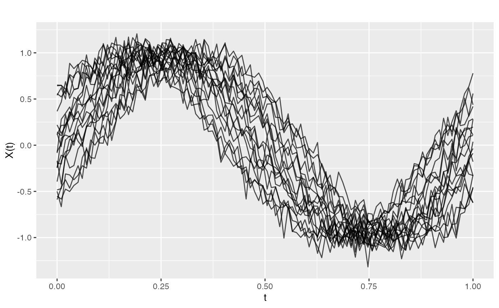
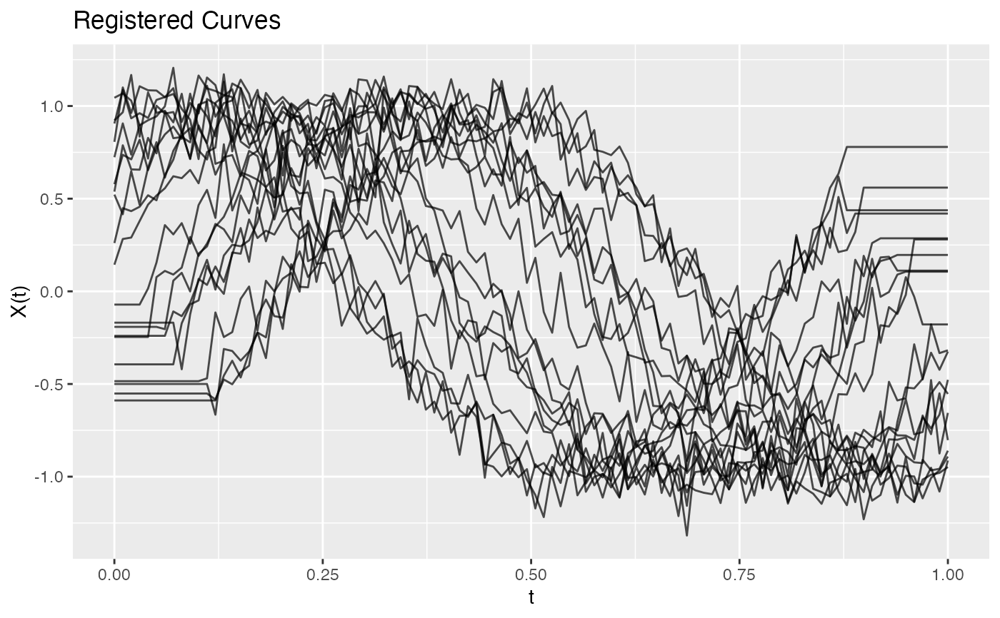

Aligns functional data by horizontal shifting to a target curve. This reduces phase variation in the sample.
Value
A list of class 'register.fd' with components:
- registered
An fdata object with registered (aligned) curves.
- shifts
Numeric vector of shift amounts for each curve.
- target
The target curve used for alignment.
- fdataobj
Original (unregistered) functional data.
Details
Shift registration finds the horizontal translation that maximizes the cross-correlation between each curve and the target. This is appropriate when curves have similar shapes but differ mainly in timing.
For more complex warping, consider DTW-based methods.
See also
metric.DTW for dynamic time warping distance
Examples
# Create phase-shifted curves
set.seed(42)
t <- seq(0, 1, length.out = 100)
X <- matrix(0, 20, 100)
for (i in 1:20) {
phase <- runif(1, -0.1, 0.1)
X[i, ] <- sin(2*pi*(t + phase)) + rnorm(100, sd = 0.1)
}
fd <- fdata(X, argvals = t)
# Register curves
reg <- register.fd(fd)
print(reg)
#> Curve Registration
#> ==================
#> Number of curves: 20
#> Shift statistics:
#> Min: -0.1212
#> Max: 0.1212
#> Mean: -5e-04
#> SD: 0.0856
# Compare original vs registered
par(mfrow = c(1, 2))
plot(fd)

plot(reg$registered)
